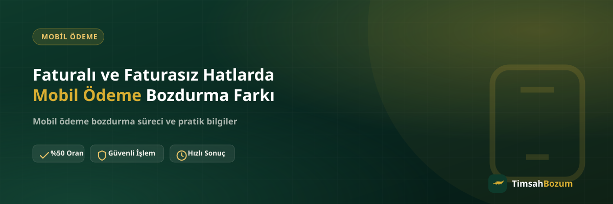

Mobil ödeme bakiyesi hem faturalı hem faturasız hatlarda oluşabiliyor, ama iki hat tipinde bakiyenin nasıl biriktiği ve bozdurma sürecine nasıl yaklaşman gerektiği konusunda kafası karışan çok kişi var. Bu yazıda faturalı ve faturasız hatlarda mobil ödeme bozdurmanın nerede benzeştiğini, nerede ayrıştığını netleştiriyoruz.
Faturalı ve Faturasız Hat Ayrımı Neden Önemli?
Faturalı hatlarda mobil ödeme harcaması aylık faturana yansır, faturasız (ön ödemeli) hatlarda ise bakiyenden veya tanımlı bir mobil ödeme limitinden anlık olarak düşer. Bu fark, bakiyenin "nasıl oluştuğunu" değiştirir ama bozdurma işleminin kendisini değiştirmez. Her iki durumda da elinde nakde çevirmek istediğin bir mobil ödeme bakiyesi olur, süreç bu bakiyenin kaynağına göre değil operatöre göre şekillenir.
Faturalı Hatta Mobil Ödeme Bozdurma Nasıl İşler?
Faturalı hatlarda genellikle bir üst limit tanımlıdır ve bu limit dahilinde yapılan mobil ödeme harcamaları o ayki faturaya eklenir. Bozdurma işlemi için faturanın kesilmesini beklemen gerekmez; güncel bakiyeni veya kullanılabilir mobil ödeme tutarını gösteren bir ekran görüntüsü genellikle yeterlidir. WhatsApp üzerinden bu görüntüyü paylaştığında, operatörüne göre geçerli oran teyit edilir ve süreç ilerler.
Faturasız (Ön Ödemeli) Hatta Süreç Farklı mı?
Faturasız hatlarda mobil ödeme bakiyesi, hattına tanımlanmış bir limit veya yüklenen bir bakiye üzerinden çalışır. Buradaki avantaj, bakiyenin faturaya yansımasını beklemeden anlık olarak görülebilmesidir. Bozdurma açısından adımlar aynıdır: güncel bakiyeni gösteren bir ekran görüntüsü paylaşman yeterli, ek bir belge veya üyelik istenmez.
Hangi Hat Türünde Bozdurma Daha Hızlı Sonuçlanır?
Hız, hat tipinden değil paylaşılan bilginin eksiksizliğinden ve mesajın gönderildiği saatten etkilenir. Bakiye ekran görüntüsü net ve güncelse, operatör ve tutar bilgisi ilk mesajda eksiksiz verilmişse, faturalı ya da faturasız fark etmeksizin süreç aynı hızda ilerler. Asıl gecikme sebebi genelde eksik veya bulanık bilgi paylaşımı oluyor, hat tipi değil.
Operatöre Göre Fark Değişir mi?
Evet, ama bu fark hat tipinden değil operatör seçiminden kaynaklanır. Her operatörün kendi oranı vardır ve bu oran, hattın faturalı ya da faturasız olmasından bağımsız olarak uygulanır. Güncel oranları ve hangi operatörlerde işlem yapıldığını mobil ödeme bozdurma sayfamızdan inceleyebilirsin; işlem öncesi güncel oranı WhatsApp'tan teyit etmek her zaman en doğrusu.
Faturalı Hatlarda Fatura Dönemi Neden Önemli?
Faturalı hatta harcanan mobil ödeme tutarı bir sonraki fatura döneminde karşına çıkar. Bu, bozdurma işlemini engellemez ama bilmen gereken bir detaydır: bozdurduğun bakiye, faturana yansıyacak bir tutar anlamına gelir. Faturasız hatta ise bu ilişki yoktur, bakiye anlık olarak hesabından düşer veya yüklenir. İki durumda da işlem öncesi güncel bakiyeni doğru göstermen, hem senin hem karşı tarafın süreci net takip etmesini sağlar.
Bozdurma İşlemi Güvenilir mi?
Süreç boyunca senden istenen tek şey operatör ve bakiye bilgisi; hesabına erişim, şifre veya SMS doğrulama kodu talep edilmez. Böyle bir talep gelirse bunun bozum süreciyle ilgisi olmadığını bilmen gerekir. İşlemler yalnızca resmi WhatsApp hattımızdan (+90 543 887 21 71) yürür, her gün 10:00-03:00 arası aktif oluyoruz. Başka bir numaradan "TimsahBozum" adına ulaşıldığını düşünüyorsan, bilgi paylaşmadan önce resmi hattan teyit almanı öneririz.
Hat Tipini Değiştirirsem Bozdurma Süreci Etkilenir mi?
Faturalı hattı faturasıza çevirmek ya da tam tersini yapmak, elindeki güncel mobil ödeme bakiyesini bozdurma hakkını ortadan kaldırmaz. Önemli olan işlem anında hattının hangi tipte olduğu ve o anki bakiyenin güncel görünmesidir. Hat tipi değişikliği yakın zamanda yapıldıysa, ekran görüntüsünü değişiklik sonrası güncel haliyle almak karışıklığı önler.
Ekran Görüntüsünü Nasıl Hazırlamalısın?
Faturalı hatlarda operatör uygulamasındaki "kullanılabilir mobil ödeme tutarı" veya benzeri bir alanı, faturasız hatlarda ise ana bakiye ya da mobil ödeme limiti ekranını baz almak en sağlıklısı. Her iki durumda da ekran görüntüsünde tutarın ve tarihin net okunması, işlemin ilk mesajdan itibaren hızlı ilerlemesini sağlar. Hangi ekranı göstereceğinden emin değilsen, bunu da WhatsApp'ta sorabilirsin.
Fatura Kesim Tarihine Yakın Bozdurmak Sakıncalı mı?
Faturalı hatlarda fatura kesim tarihine yakın günlerde bozdurma yapmak süreci değiştirmez. Güncel bakiye, kesim tarihinden bağımsız olarak her an ekran görüntüsüyle gösterilebilir. Tek fark, o dönemki harcamanın bir sonraki faturaya yansıyacak olmasıdır; bu da bozdurma işlemini erteleme ya da beklemeye gerek olmadığı anlamına gelir. Kesim tarihini beklemek yerine, elindeki güncel bakiyeyle işlemi başlatman en pratiği.
Vodafone, Türk Telekom ve Turkcell'de Hat Tipi Fark Yaratır mı?
Vodafone ve Türk Telekom mobil ödeme bozdurmada oran operatöre özgüdür ve faturalı-faturasız ayrımı yapılmaz. Turkcell'de de durum benzer: dilersen doğrudan Turkcell mobil ödeme bozdurma üzerinden, dilersen Paycell hesabın varsa Paycell üzerinden işlem yapılır; bu tercih hattının faturalı ya da faturasız olmasına değil, hangi kanalı kullanmak istediğine bağlıdır. Hangi yöntemin senin için daha uygun olduğunu WhatsApp'ta sorarak netleştirebilirsin.
İlgili Yazılar
- Mobil Ödeme Bakiyesi Nedir, Nasıl Oluşur?
- Hangi Operatörlerde Mobil Ödeme Bozdurma Yapılır?
- Mobil Ödeme Limiti Nasıl Artırılır?
Faturalı ya da faturasız hattın olsun, mobil ödeme bakiyeni bozdurmak için ihtiyacın olan tek şey güncel bakiyeni gösteren bir ekran görüntüsü. Hazır olduğunda WhatsApp hattımıza yazarak güncel oranı teyit edebilir ve işlemini başlatabilirsin.